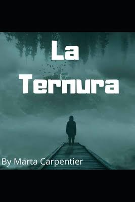

Ciencia-Ficción
¿Qué es?
- Es un género cuyos contenidos se encuentran basados en supuestos logros científicos o técnicos que podrían lograrse en el futuro.
Diferencia al género fant´stico: - Este sustento científico hace que la ciencia ficción se diferencie del género fantástico, donde las situaciones y los personajes son fruto de la imaginación.
Sus características dependen de sus temáticas, las cuales pueden ser:
- Viajes al espacio.
- Conquista espacial.
- Consecuencias de una hecatombe.
- Apocalipsis nuclear.
- Mutaciones.
- Evolución de los robots.
- Realidad virtual.
- Civilizaciones alienigenas, diotois y utopís.

Autores y libros de Ciencia Ficción:
La Maquina del tiempo- Herbert George Wells (1895)El fin de la eternidad- Isaac Asimov

Se eligió el libro la máquina del tiempo, ya que es un libro que entretiene por la historia que se relata, como tanto despierta la imaginación al momento de leer, también da una riqueza de palabras y así se tiene un ejemplo de como se puede redactar.
En el libro se menciona sobre la realidad de las cuatro dimensiones, de las cuales son 3 planos del espacio y la última es el tiempo. Cómo también se menciona que el científico Simón Newcomb (Astrónomo Matemático) intento construir la parte de la geometría con cuatro dimensiones.
Por otra parte, se sigue la historia del viajero en el tiempo y los recorridos que hace en varios lugares. Publicado en Freeditorial y escrito por H. G. Wells se dice que hizo esta obra lúcida sátira (ridiculizar la inconsistencia de la sociedad capitalista de su tiempo 1895), una civilización en ruinas, producto de un progreso científico incontrolable. Influido por el socialismo utópico además de trasladar sus inquietudes científicas y de plantear una reflexión, plenamente actual, sobre la responsabilidad del ser humano respecto al futuro.

El libro "el fin de la eternidad" se eligió con el fin de llevar esa imaginación de algunas cosas a la ficción. El libro trata sobre que había una persona que entraba a una cabina, el cual lo trasladaba hacia infinidades de lugares y de siglos.
Te da realmente muchos aprendizajes como el de los errores, nosotros cometemos errores, pero los podemos solucionar, hay cosas de la vida diaria con las cuales te puedes identificar e incluso sentir como si estuvieses en su lugar de Andrew Harlan el protagonista de la historia relatada. Está historia fue escrita en 1955 por Isaac Asimov, publicado por ediciones Martínez Roca, S.A. En 1977.
Romance
¿Qué es?
- Relato extenso de ficción
- Normalmente escrito en prosa.
Diferencia de la novela moderna: - Presenta un mundo imaginario en el que los personajes, así como sus situaciones pertenecen a la esfera de lo maravilloso y lo insólito.
Autores y libros de Romance:
Cantar- Mio Cid (1968)Libro del Caballero Zifar- Ferrand Martinez (1983)
El libro Cantar de Mío Cid es una obra literaria anónima, fue escogida para el apartado de los libros de romance, por qué es un poema escrito en Castellano. Esta trata sobre la vida de un caballero llamado Don Rodrigo Díaz de Vivar, el cual es un paradigma del héroe que suscita fascinación y constituye un modelo de referencia.
La siguiente es una novela de amor llamada el caballero Zifar. Este fue escogido para el apartado de los libros del amor, ya que en el contiene una historia relatada y con ayuda de la imaginación te lleva a la Antigüedad interpretadas bajo la luz del cristianismo honor caballeresco y del amor cortesano con una indiferencia total hacia cualquier otra forma de vida.
Novela
- La ternura
-

Marta Carpentier, nueva escritora española, con este relato pleno de fantasía y sensibilidad quedó en el segundo lugar del gusto de los lectores de todo el mundo en los Premios Literarios Freeditorial 2017.
La Ternura es un viaje al centro de nuestras emociones más hirientes, las que nos golpean convirtiéndonos en lo que somos. No es sino un gigante y crudo retrato sobre el poder de la entrega, la pérdida y de cómo nuestros deseos nos afectan hasta el punto de transformarnos por completo. En otras palabras, un certero y afilado dibujo del corazón humano, tan lleno siempre de miedos pero también de esperanzas.
Campo disciplinar de las matemáticas:
- Primer semestre:
- Matemáticas I
- Segundo Semestre:
- Tercer Semestre:
- Cuarto Semestre:
- Quinto Semestre:
- Sexto Semestre:
Uno de ellos es Matemáticas I. Nos menciona que tiene una variedad de temas para el desarrollo de conocimiento como el resolver problemas algebraicas y aritméticas, utilizar la parte de magnitudes y números reales, realizar sucesiones de números y sumas, hacer transformaciones algebraicas parte uno (En variable de polinomios, productos notables y factorización), parte dos (trinomios, división de polinomios), resuelve ecuaciones lineales (I, II, III), Solucionar ecuaciones cuadráticas (I, II). Todo esto para los estudiantes que van empezando el bachillerato y adaptando junto con lo aprendido en la secundaria.
Para nuestro Campo disciplinar de las matemáticas agregamos el siguiente libro de Matemáticas II. El cual consiste en enseñar al estudiante de 2do semestre; utilizar ángulos, triángulos y relaciones aritméticas; comprender la congruencia de los triángulos, resolución problemas de semejanzas de triángulos y teorema de Pitágoras, reconocer las propiedades de los polígonos, emplear la circunferencia, describir las relaciones trigonométricas para resolver triángulos rectángulos y aplicar funciones trigonométricas, aplicación de (leyes de los senos y cosenos, estadística elemental, probabilidad clásica).
En el Campo diciplinar de las matemáticas se agregó el siguiente libro "Matemáticas IIl". Este nos menciona distintos temas para la enseñanza de los alumnos del 3er semestre como son los siguientes: Reconocer lugares geométricos, aplicar propiedades ser segmentos rectilíneos y polígonos, aplica elementos de una recta como lugar geométrico, Utilizar ecuaciones de una recta, aplicar elementos y ecuaciones de la circunferencia, aplicación de elementos y ecuaciones de una parábola.
Se integro el libro Matemáticas IV en el Campo diciplinar de las matemáticas, por qué alimenta el desarrollo de conocimientos de cada uno de los estantes de 4to semestre de la escuela media superior. Nos muestra distintos temas de los cuales es son: Reconocer y realizar operaciones con distintos tipos de funciones, aplica funciones especiales y transformaciones gráficas, emplear funciones polinomiales de grado cero, uno y dos, utilizar funciones polinomiales de grado tres y cuatro, utilizar funciones (resolución de problemas, Aplicación de funciones racionales, exponenciales, logarítmicas), aplicar funciones periódicas.
Probabilidad y estadística I, se incluyó ya que tiene por bloques temas que el alumno puede ocupar los para la asignatura. Los temas expuestos son: 1. Comprender y describir la variabilidad estadística y sus aplicaciones: conceptos básicos, estadística, población y muestra, etc. 2. Describir y presentar datos de forma tabular y gráfica: organización de los datos, análisis de gráficas y tablas. 3. Aplicación de estadística descriptiva. 4. An´lisis de teoría de conjuntos y sus aplicaciones.
Probabilidad y estadística II, en este libro se tiene por contenido: aplicación de técnicas de conteos, aplicación de probabilidad conjunta, analizar las distribuciones de probabilidad de variables aleatorias, discretas y conjuntas
Campo disciplinar de las ciencias experimentales:
- Primer semestre:
- Física I
- Segundo Semestre:
- Tercer Semestre:
- Química I
- Biología I
- Cuarto Semestre:
- Química II
- Biología II
- Sexto Semestre:
Para los alumnos de primer semestre con los distintos temas de: Reconocer el lenguaje de técnico de la filosofía, identificar las diferencias entre los distintos tipos de movimiento, se comprende el movimiento del cuerpo a partir de leyes de Newton, se relaciona el trabajo con la energía. Con el fin de enriquecer si aprendizaje.
Para los alumnos de segundo Semestre, en el apartado de Campo disciplinar de ciencias experimentales. Se encuentra el libro de "Física II" se integraron por los temas que ofrecen como: • Explicación del comportamiento de los fluidos • Identificación de diferencia entre el calor y la temperatura • Comprensión de leyes de la electricidad • Relación de la electricidad con el magnetismo. Toda esta parte para ayudar a la comunidad estudiantil.
Para el Campo disciplinar de ciencia experimentales integramos el Libro de Química I. Con el fin de que los alumnos de tercer Semestre adapten los conocimientos y sigan con el aprendizaje de los distintos temas como: • Reconocer a la química como una herramienta para la vida • Comprender la interrelación de la materia y energía • Explicación del modelo atómico actual y Aplicaciones • Interpretar la tabla periódica • Interpretar enlaces químicos e interacciones intermoleculares • Manejo de nomenclatura química inorgánica • Representar y operar reacciones químicas, comprender los procesos asociados con el calor y la velocidad de las reacciones químicas. El cual ayuda a reforzar lo aprendido en la secundaria.
El Libro de Biología I. Se integro para el Campo disciplinar de ciencia experimentales integramos, sus temas que se encuentran como: Reconocer a la Biología como Ciencia de la vida, identificar las características y componentes de los seres vivos, reconocer la célula como unidad de la vida, describir el metabolismo de seres vivos, valorar la biodiversidad e identificar estrategias para preservarla. Esto refuerza el conocimiento ya obtenido en la secundaria, como tanto mejora ese aprendizaje a cada uno de los alumnos.
Se encuentran distintos apartados y en uno de ellos se encuentra el Campo disciplinar de ciencia experimentales, se integro el libro Química II. Con temas de: Aplicación de la noción de mol en la cuantificación de procesos químicos de tu entorno, actúas para disminuir la contaminación del aire, agua y suelo, comprensión de utilidad de los sistemas dispersos, valorar la importancia de los compuestos del carbono de tu vida diaria y entorno, identificación de importancia de las macromoléculas y sintéticas. Dirigido a los alumnos de Cuarto Semestre de media superior, dándole seguimiento al desarrollo de conocimientos.
En Biología II, tiene por contenido los temas de: identificar los tipos de reproducción celular, y organizamos en relación, reconocer y aplicar los principios de la herencia, valorar aportaciones importantes de la Biotecnología y descripción de principio de la evolución de la biodiversidad de las especies.
En Sexto Semestre se integro el Campo disciplinar de ciencia experimentales con el libro de Ecología y medio ambiente. Da una fuerte para aprender sobre cada uno de los temas de manera confiable. Estos son los temas que se encuentran: conocimiento de niveles básicos de ecología en tu contexto, comprender la dinámica de ecosistemas que integran la biosfera, identificar impacto ambiental y desarrollo sustentable, aplicando alternativas de solución.
Campo disciplinar de comunicación:
- Primer semestre:
- Taller de Lectura y Redacción I
- Lengua adicional de español I
- Segundo Semestre:
- Taller de Lectura y Redacción II
- Lengua adicional de español II
- Tercer Semestre:
- Literatura I
- Lengua adicional de español III
- Cuarto Semestre:
- Literatura II
- Lengua adicional de español IV
Se integra en el Campo diciplinar de comunicación el libro de Taller de Lectura y Redacción. Para los alumnos de media superior de Primer semestre, para dar una fuente confiable y así poder darles esa riqueza y motivación para aprender. Los temas integrados son: Practicar proceso (comunicativo, uso léxico y semántica, lectura y escritura), redactar (prototipos textuales, textos personales, textos expositivos), clasificar textos personales.
Campo diciplinar de comunicación del apartado del Primer semestre, se integró el libro de lengua adicional de español, en este apartado se enseña inglés a los alumnos de media superior, se le influye un idioma distinto al que tiene de nacimiento, estos son los temas que contiene: Who am I?, What I do anda how I live, describir what is happening, Express measures and quantities.
El libro de Taller de Lectura y Redacción II se integró al Campo diciplinar de comunicación para que los estudiantes de Segundo Semestre tengan más información sobre el contenido de este apartado. Dentro de este se encuentran temas como: práctica del proceso (comunicativo, uso léxico y semántica, lectura y escritura), redacción (prototipos textuales, textos personales, textos expositivos), clasificación (textos personales, textos expositivos).
Campo diciplinar de comunicación se integra otro libro de ayuda de Lengua adicional de español I. Ahora para los alumnos de Segundo Semestre, de igual manera es del idioma de inglés con temas de: Comparing people, objects and places, relating, important moments of the past, following instructions and understanding rules, making plans for the future.
En tercer semestre se integro al Campo diciplinar de comunicación el libro de Literatura I. Dándole refuerzos para el desarrollo de conocimiento de los temas: Identificar (literatura como arte, características, Características de novela), reconocer (género narrativo, diferencia entre fábula y epopeya, diferencia entre leyenda y mito), comprensión de características de un cuento.
Para el Campo diciplinar de comunicación en Tercer Semestre para los alumnos se integro el siguiente libro. "Lengua adicional de español III" menciona el idioma de inglés con diversos temas para el refuerzo de aprendizaje como: Describing situations of cause and effect, comparing habits and customs from different societies, describing activities that took place in the past, making requests and giving instructions.
Literatura II, es un libro que ayuda al alumno para comprender los temas como lo es reconocer los géneros líricos, análisis e interpretación, reconocer y analizar un género lirico dramático, ya que puede ser difícil de entender y este libro explica bien sobre cada subtema.
Lengua adicional de español IV, interviene en inglés, como los temas: Describir your behaver in hyphotetical situations, decribing expriences, talking about likes and dislike, describir jobs, professions and work places.